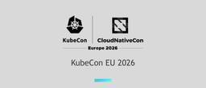
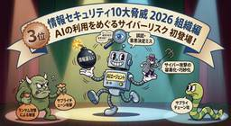
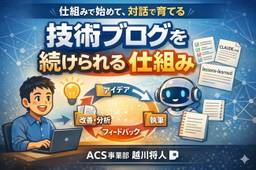

APC 技術ブログ
https://techblog.ap-com.co.jp/
株式会社エーピーコミュニケーションズの技術ブログです。
フィード
AIが型を探す往復をゼロにする — Python型ヒントをAIへのガードレールとして使う
APC 技術ブログ
AIコーディングで型エラーを繰り返さないために — Pythonの型ヒントをAIへの仕様書として使う こんにちは、エーピーコミュニケーションズ ACS事業部の福井です。 AIを使ってコードを書いていると、不思議なことに同じ場所で同じエラーが繰り返し発生することがあります。ある日、そのパターンにハッキリ気づきました。 フォームの選択値（文字列）をDBのID（整数）にマッピングする処理でした。ちょっと込み入った文字列と int 型の連結が絡む関数で、「ここを直して」とAIに依頼するたびに TypeError が飛んでくる。直してもらう、エラーが出る、また直してもらう……。 「……前もこれ見たーーー…
1日前

【Zscaler】Web ProbeとCloud Path Probeを設定してみよう——ZDXカスタムアプリケーション監視の始め方（後編）
APC 技術ブログ
ZDXでカスタムアプリケーションの監視を始める手順を画面キャプチャ付きで解説。Web ProbeのURL選定・ステータスコード設定からCloud Path ProbeのAdaptive Mode・Follow Web Probeまで、設定時の判断ポイントをウォークスルー形式で紹介します。
2日前

Azure Databricksを使ってDatadogの「Data Observability」を試してみた
APC 技術ブログ
こんにちは。クラウド事業部の遠見です。 本記事は、Datadogの「Data Observability」を実際に検証したエンジニアが、内容をできる限り客観的に共有することを目的に作成しました。 近年、インフラの可観測性（Observability）と同じように、データの健全性を可観測にする「Data Observability」が注目されています。 今回は、Azure Databricksを使って、Datadogの「Data Observability」を試してみました。 セットアップからカタログ同期、そして意図的にデータを汚染させる「破壊検証」の結果までをレポートします。 はじめに：Dat…
2日前
【CrowdStrike】Charlotte AIをオプトインしてみた
APC 技術ブログ
本記事では、Charlotte AIの概要からセットアップ手順、そして実働させて分かった運用プロセスの変化をレポートします。
2日前

【KubeCon + CloudNativeCon 2026 EU】 FREEDOME THROUGH BOUNDARIES
APC 技術ブログ
はじめに 皆さんこんにちは。エーピーコミュニケーションズ ACS事業部 亀崎です。 私は2026年3月23日〜26日に開催されているKubeCon + CloudNativeCon 2026 Europeに参加のため、 現在アムステルダムに来ております。今日3月26日はDay 3の様子をお送りします。 少しでも皆さんに生の情報をお届けすべく、時間のある限り本ブログで紹介したいと思います。 FREEDOM THROUGH BOUNDARIES : Building Configurations That Age Well sched.co 例えば、Platform Teamが開発者に対して He…
2日前
【KubeCon + CloudNativeCon 2026 EU】 個人的に推しのDapr & Dapr Agent
APC 技術ブログ
はじめに 皆さんこんにちは。エーピーコミュニケーションズ ACS事業部 亀崎です。 私は2026年3月23日〜26日に開催されているKubeCon + CloudNativeCon 2026 Europeに参加のため、 現在アムステルダムに来ております。 少しでも皆さんに生の情報をお届けすべく、時間のある限り本ブログで紹介したいと思います。 Dapr & Dapr Agent Dapr AgentがDay 1 のKeynote Sesionでも取り上げられましたが、メンテナトラックを含めると3つのセッションがありました。 今回このうちの２つに参加してまいりました。個人的にDapr推しでもありま…
2日前
会議録画を議事録に変える — MLX Whisper + AIで作るワンストップ分析ツール開発記
APC 技術ブログ
こんにちは。ACS事業部の越川です。 「会議の録画、もっと活用できないかな」 そんな問いから始まったツール開発の記録です。1時間の会議録画をコマンド一発で文字起こし・キャプチャ抽出・議事録生成まで自動化するスクリプトを作りました。その過程で、7回の試行錯誤と1つの重要な気づきがありました。 きっかけ 作ったもの 実測結果 7回の試行錯誤 試行1: 文字起こしのハルシネーション 試行2: キャプチャの取りすぎ 試行3: 閾値の調整 試行4: ローカルVLMの挫折 試行5: API送信の壁 試行6: SRT形式への移行 試行7: タイムライン統合 重要な気づき — 自動化しすぎると本質が消える ど…
2日前

AIがいきなり3位——IPA「情報セキュリティ10大脅威 2026」が示すもの
APC 技術ブログ
こんにちは、エーピーコミュニケーションズ ACS事業部の福井です。 2026年1月、IPAが「情報セキュリティ10大脅威 2026」を公表しました。組織向けランキングで「AIの利用をめぐるサイバーリスク」が初登場で3位に入りました。ランサム攻撃・サプライチェーン攻撃という常連トップ2と並んで、AIリスクが同じ土俵に立ったということです。 「将来的には問題になるかもね」という話ではなく、今すぐ統制・運用の対象にすべき脅威として公的に認定されたインパクトは大きいと思っています。 IPA「情報セキュリティ10大脅威 2026」組織編トップ3 国家支援ハッカーが「Gemini」を攻撃インフラとして使う…
3日前

【OCI】OKEのサイクル・ノードでKubernetesのバージョンアップはどれぐらい楽になるのか
APC 技術ブログ
目次 目次 はじめに 検証 準備：古いバージョンのOKEクラスタ作成 準備：コントロールプレーンのバージョンアップ ワーカーノードのバージョンアップ バージョンアップ方法の紹介 サイクル・ノード 参考：サイクルオプション「ブート・ボリュームの置換え」 ノードの手動削除 所感 参考資料 お知らせ はじめに こんにちは！クラウド事業部の中根です。 OKEではクラスタタイプを選択でき、無料の基本クラスタと有料の拡張クラスタが存在します。 拡張クラスタでは、基本クラスタで使えない様々な機能を使うことができます。 その中に、主にKubernetesのバージョンアップの時に使えるサイクル・ノードという機能…
3日前
【KubeCon + CloudNativeCon 2026 EU】 Day2 Keynoteのキーワードは「Sovereignty」
APC 技術ブログ
はじめに 皆さんこんにちは。エーピーコミュニケーションズ ACS事業部 亀崎です。 私は2026年3月23日〜26日に開催されているKubeCon + CloudNativeCon 2026 Europeに参加のため、 現在アムステルダムに来ております。今日3月25日はDay 2の様子をお送りします。 少しでも皆さんに生の情報をお届けすべく、時間のある限り本ブログで紹介したいと思います。 Digital Sovereinty Day2のKeynote Sessionでは「 Sovereignty 」という言葉が何度も登場しました。あまり馴染みのない言葉なのでとても気になりました。 sched.…
3日前
【KubeCon + CloudNativeCon 2026 EU】 The State of Backstage in 2026
APC 技術ブログ
はじめに 皆さんこんにちは。エーピーコミュニケーションズ ACS事業部 亀崎です。 私は2026年3月23日〜26日に開催されているKubeCon + CloudNativeCon 2026 Europeに参加のため、 現在アムステルダムに来ております。今日3月25日はDay 2の様子をお送りします。 少しでも皆さんに生の情報をお届けすべく、時間のある限り本ブログで紹介したいと思います。 私のKubeCon参加のメインテーマでもあるBackstageのこれまでと今後についてです。 The State of Backstage in 2026 Backstageは現在 4k以上のAdopter …
3日前

【AKS】hubble-ui を利用してCiliumNetworkPolicyで制御されたコンテナ間の通信内容を覗いてみた
APC 技術ブログ
はじめに こんにちは。ACS事業部 木戸と申します。 前回、Ciliumの通信制御を行う検証を行った際にアプリの動作としては想定通りの結果になりましたが、内部でどのように制御されていたのかは確認ができていませんでした。 Ciliumには通信内容を可視化する hubble-ui というツールがあるということで、今回は先日構築したAKS環境に導入してコンテナ間の通信内容がどのように制御されているのか可視化してみたいと思います。 techblog.ap-com.co.jp 目次 はじめに 目次 1. Hubbleとは 2. Advanced Container Networking Services…
3日前

技術ブログを「続けられる仕組み」で書く — 社内講習会で共有したワークフローと気づき
APC 技術ブログ
こんにちは。ACS事業部の越川です。 先日、社内の週次定例で「技術ブログを続けられる仕組みで書く」というテーマで講習会を行いました。 技術ブログを書きたいけど続かない。ネタが出てこない。レビューが怖い。——エンジニアなら一度は感じたことがある悩みだと思います。本記事では、これらの悩みを仕組みで解消するアプローチと、講習会で得られた気づきをまとめます。 なぜ講習会をやったのか 共有した仕組みの全体像 ネタに困らない仕組み 手軽に書ける ≠ 手抜き — 質を担保する仕組み AIとの協働における役割分担 参加者からのフィードバックと気づき 響いた言葉 新たな気づきを与えてくれた指摘 講習会をやって気…
4日前
【KubeCon + CloudNativeCon 2026 EU】ソフトウェアサプライチェーンセキュリティのセッションが盛況
APC 技術ブログ
はじめに 皆さんこんにちは。エーピーコミュニケーションズ ACS事業部 亀崎です。 私は2026年3月23日〜26日に開催されているKubeCon + CloudNativeCon 2026 Europeに参加のため、 現在アムステルダムに来ております。今日3月24日はDay 1の様子をお送りします。 少しでも皆さんに生の情報をお届けすべく、時間のある限り本ブログで紹介したいと思います。 ソフトウェアサプライチェーンセキュリティとコンプライアンスチェック関連 本日参加したセッションのうち、２つがソフトウェアサプライチェーンや開発に関するコンプライアンスチェックに関する内容のものでした。 Rea…
4日前
【KubeCon + CloudNativeCon 2026 EU】今年のトレンドはAI、AI、そしてAI 1
1
APC 技術ブログ
はじめに 皆さんこんにちは。エーピーコミュニケーションズ ACS事業部 亀崎です。 私は2026年3月23日〜26日に開催されているKubeCon + CloudNativeCon 2026 Europeに参加のため、 現在アムステルダムに来ております。今日3月24日はDay 1の様子をお送りします。 少しでも皆さんに生の情報をお届けすべく、時間のある限り本ブログで紹介したいと思います。 Day 1 Keynote 少し前の予告編で、セッション等を見ているとトレンドが見えてくるということを申し上げました。 techblog.ap-com.co.jp そういった意味でDay 1 のKeynote…
4日前
AIはあなたに同調する — Sycophancy問題を知っていますか③ 〜組織編〜
APC 技術ブログ
こんにちは。ACS事業部の越川です。 気づける人と気づけない人がいる — 知識パラドックス 組織で起きた「気づけなかった」事例 振り返りで見えた組織の課題 仕組み1: AIが自律的に判断できる領域を広げる 仕組み2: PoCをチームが使えるツールに昇格させる 仕組み3: フィードバックを蓄積し、ツール自体を育てる 仕組み4: 「なぜ」を残す文化を作る 仕組み5: 仕組みを見せて、やるかやらないかは委ねる まとめ: 個人の実践から組織の文化へ 参考文献 お知らせ Sycophancyシリーズの最終回です。①問題提起編で問題を知り、②実践編で個人の対策を実践しました。 ①問題提起編: AIはあなた…
4日前
Antigravityを活用した伴走型学習スタイル
APC 技術ブログ
はじめに：AI時代の「学び」で大切にしたいこと こんにちは、エーピーコミュニケーションズ ACS事業部の福井です。 昨今のAIの進化は目を見張るものがあり、情報の要約や検索は一瞬で終わるようになりました。 とても便利な反面、自身に対してある漠然とした不安を抱くようにもなりました。 「AIに綺麗な回答を出してもらううちに、自身がちゃんとアウトプットできているだろうか？」 「AIの説明を読んで、本当は理解できていないのに『わかった気』になってしまっていないだろうか？」 AIのOutputをInputするだけで満足してしまっているのではないか――。 そんな危機感から、先日IT資格を取得した際、「自身…
5日前
【BackstageCon EU 2026】AI全盛時代におけるBackstageの使い方
APC 技術ブログ
はじめに 皆さんこんにちは。エーピーコミュニケーションズ ACS事業部 亀崎です。 私は2026年3月23日〜26日に開催されているKubeCon + CloudNativeCon 2026 Europeに参加のため、 現在アムステルダムに来ております。今日3月23日はDay0のCo-Located EventのひとつBackstageConに参加しています。 少しでも皆さんに生の情報をお届けすべく、時間のある限り本ブログで紹介したいと思います。 今回は、Backstage x AIという点について考えてみたいと思います。 BackstageにおけるAIの取り組み 生成AIを開発ライフサイクル…
5日前
【BackstgeCon EU 2026】Backstageを今以上に楽に使えるようになる未来: Dynamic Plugin Loading
APC 技術ブログ
はじめに 皆さんこんにちは。エーピーコミュニケーションズ ACS事業部 亀崎です。 私は2026年3月23日〜26日に開催されているKubeCon + CloudNativeCon 2026 Europeに参加のため、 現在アムステルダムに来ております。今日3月23日はDay0のCo-Located EventのひとつBackstageConに参加しています。 少しでも皆さんに生の情報をお届けすべく、時間のある限り本ブログで紹介したいと思います。 今回は、Backstageがもっともっと簡単に使えるようになる未来の機能のご紹介です。 背景 Backstageをご自身で作成している方（ crea…
5日前
【BackstageCon EU 2026】 開発者ポータルで重要なのは Continuous Improvement
APC 技術ブログ
はじめに 皆さんこんにちは。エーピーコミュニケーションズ ACS事業部亀崎です。 私は2026年3月23日〜26日に開催されるKubeCon + CloudNativeCon 2026 Europeに参加のため、 今アムステルダムに来ております。今日3月23日はDay0のCo-Located EventのひとつBackstageConに参加しています。 少しでも皆さんに生の情報をお届けすべく、時間のある限り本ブログで紹介したいと思います。 まずはBackstageConの午前中のセッションの中から気になったものをご紹介します。 Booking.com "Our Journey to a Uni…
5日前
【AKS】CiliumNetworkPolicyによるコンテナ間の通信制御を検証してみる
APC 技術ブログ
はじめに 1. CiliumNetworkPolicyとは 2. Advanced Container Networking Services (ACNS)の有効化 3. サンプルアプリをデプロイする 4. ネットワークポリシーを実装する前の挙動を確認する 5. CiliumNetworkPolicyを実装する 1. バックエンドのアウトバウンド通信を制御するルール（egressルール） 2. Echoサーバーのインバウンド通信を制御するルール（ingerssルール） 6. 通信制御の動作確認 バックエンドから特定のURLにのみアクセスできる状態かどうかの確認 Echoサーバへの通信制御の確認…
5日前
AIはあなたに同調する — Sycophancy問題を知っていますか② 〜実践編〜
APC 技術ブログ
こんにちは。ACS事業部の越川です。 AIは「足りない」と言ってくれない 実践1: 複数のAIエージェントに評価させる 実践2: AIに「足りているか」の判断を委ねない 実践3: 人間のフィードバックをプロセスに組み込む 実践4: 相手のキャパに合わせて渡す量を調整する まとめ: 同調に気づく仕組みを持つ 参考文献 お知らせ 前回の記事で、AIがユーザーに同調する「Sycophancy」という現象と、メモリ機能がそれを強化するリスクについて紹介しました。 techblog.ap-com.co.jp 「怖い」と気づけたなら、次は「どう対策するか」です。本記事では、AIの同調に気づき、視野を広げる…
6日前
DatadogのLLM Observabilityを触ってみた 〜LLMアプリのブラックボックス化に怯えないために〜
APC 技術ブログ
こんにちは。クラウド事業部の遠見です。 本記事は、Datadogの「LLM Observability」を実際に検証したエンジニアが、内容をできる限り客観的に共有することを目的に作成しました。 AIが急速に発展し続ける中で、LLMアプリケーションの「見える化」は運用における重要な課題となっています。 そこで今回は、Datadogが提供する「LLM Observability」を実際に試してみました。 はじめに：Datadog×APC共催ランチセミナー開催 検証の背景 検証環境の構成 検証環境の構築 Microsoft Foundryでのモデルデプロイ Pythonスクリプトに必要な情報の取得 …
6日前

【AKS】AKS環境に EnvoyGateway を導入して GatewayAPI による通信を検証してみた
APC 技術ブログ
はじめに 準備 1. AKSクラスターの作成 2. サンプルアプリのデプロイ 3. EnvoyGatewayのインストール 4. GatewayClass, Gatewayをデプロイする。 GatewayClass Gateway HttpRoute 5.サンプルアプリの為のルーティングのHTTPRouteをデプロイする。 5. まとめ ACS事業部のご紹介 はじめに 皆様、こんにちは。ACS事業部 木戸と申します。 今回は AKS 環境で Gateway API を利用するために EnvoyGateway を導入し、HTTPRoute を利用してURLのパスに応じたルーティングが行えるかを検…
9日前
【AWS】JAWS-UG 朝会で『OpenClaw を Amazon Lightsail で動かす理由』というタイトルで登壇しました
APC 技術ブログ
『OpenClaw を Amazon Lightsail で動かす理由』というタイトルで登壇しました
10日前
AI時代の"ゴールデンパス"、まだ誰も定義していないなら自分たちで定義してみた
APC 技術ブログ
こんにちは。ACS事業部の越川です。 「ゴールデンパス」とは何か なぜ今、AI時代のゴールデンパスが必要なのか ゴールデンパスの3つの構成要素 1. インストラクション — AIの行動規範 2. Skills — AIが実行できるタスクの定義 3. ADR — 判断の「なぜ」を記録する 実践：このブログワークフローはゴールデンパスだった 組織への展開：スモールに真似できる形で まとめ お知らせ 2026年3月17日、SoftBank Tech Nightをオンラインで視聴しました。草間一人氏（PagerDuty / Platform Engineering Meetupオーガナイザー）のセッシ…
11日前
【Zscaler】「遅い」の先を可視化する—ZDX Cloud Path Probeの仕組みとダッシュボードの読み方（前編）
APC 技術ブログ
ZDX Cloud Path Probeの仕組みとダッシュボードの読み方を解説。パスマッピングやAdaptive Modeの動作を整理したうえで、レイテンシグラフ・Hop View・Command Line Viewを使った障害区間の特定方法を3ステップで紹介します。
11日前
Copilot coding agentのPR descriptionは変えられないのか？ — GitHub Actionsで変えた
APC 技術ブログ
こんにちは。ACS事業部の越川です。 GitHub Copilot coding agentが自動生成するPRの本文（description）、チームのフォーマットに合わせたいと思ったことはありませんか？ 先日、この課題を5パターンで検証した記事が公開されました。 zenn.dev 結論は「copilot-instructions.mdもPRテンプレートも効かない」。PR本文の生成はインストラクションとは別の独立したフェーズで実行されているため、現時点では公式の方法ではカスタマイズできません。 本記事では、この「できなかった」に対して、GitHub Actionsによる後処理で書き換える方法を…
11日前
Datadog MCP ServerがGAされたので、AWS DevOps Agentと連携して触ってみた
APC 技術ブログ
こんにちは。クラウド事業部の遠見です。 本記事は「Datadog MCP Server」と「AWS DevOps Agent」の連携を実際に検証したエンジニアが、内容をできる限り客観的に共有することを目的に作成しました。 今回は、2026年3月10日に一般提供（GA）が開始された「Datadog MCP Server」を、AWSから現在プレビュー版として提供されている「AWS DevOps Agent」を使って利用するハンズオンを行いました。 www.datadoghq.com 独自の検証や工夫したポイントも含めて、オリジナルな体験記として参考にしていただければ幸いです。 目次 目次 はじめに…
11日前
JJ保険に救われた話
APC 技術ブログ
JJ保険に救われた話 – Copilot時代のローカル変更バックアップ こんにちは、エーピーコミュニケーションズ ACS事業部の福井です。 最近は GitHub Copilot CLI を使った開発スタイルを本格的に試しています。 プロンプト一発で広範囲をガッと書き換えられるあの感覚、クセになりますよね。 そんなある日、Copilot CLI で複数ファイルをまたいだ機能変更を一気に進めていたときのこと。 一段落したのでブランチを切り替えてリフレッシュしたら……あれ？ あのファイルがない。 ローカルにしか置いていなかった下書き用の 309.md が、きれいさっぱり消えていました。 「やったな、…
12日前